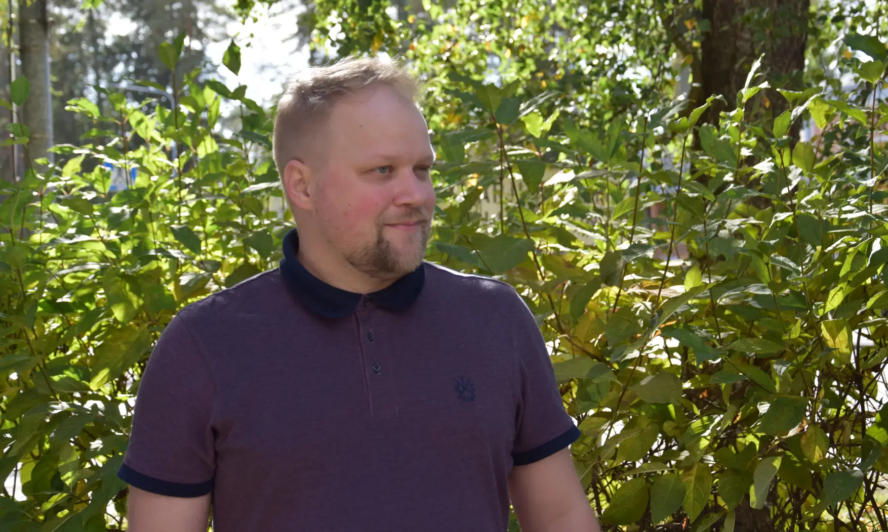

Luovun ehdokkuudestani eduskuntavaaleissa 2027
Tiedote: julkaisuvapaa heti
Olen päättänyt luopua ehdokkuudestani vuoden 2027 eduskuntavaaleissa terveydellisistä ja henkilökohtaisista syistä.
Kävin tänään Tammisairaalassa Meilahdessa edellisen silmäleikkaukseni jälkitarkastuksessa. Tarkastuksessa todettiin, että tarvitsen vielä uuden leikkauksen. Tämän perusteella olen tullut siihen johtopäätökseen, että minun on annettava riittävälle toipumiselle aikaa.
Olen keskustellut päätöksestä hyvässä ja rakentavassa hengessä Keskustan Vantaan kunnallisjärjestön puheenjohtajan, Uudenmaan piirin puheenjohtajan sekä piirin toiminnanjohtajan kanssa.
Olen luonnollisesti harmissani siitä, että joudun tekemään tällaisen päätöksen. Samalla tiedän sen olevan tässä tilanteessa oikea ratkaisu. Keskusta tarvitsee eduskuntavaaleihin ehdokkaita, jotka pystyvät antamaan kaikkensa hyvän vaalituloksen eteen. Koen, etten pysty tällä hetkellä tarjoamaan sellaista kampanjaa, jonka mahdolliset äänestäjäni ansaitsisivat.
Ehdokkuudesta luopuminen ei kuitenkaan tarkoita luopumista poliittisesta vaikuttamisesta. Jatkan työtäni Keskustan riveissä sisäisen turvallisuuden, kestävän talouden, laadukkaan koulutuksen ja terveydenhuollon sekä ympäristönsuojelun puolesta.
Jatkan edelleen Vantaan Keskustan kunnallisjärjestön ja valtuustoryhmän sihteerinä, ja olen jatkossakin käytettävissä näihin tehtäviin. Sama koskee puheenjohtajuuttani Keskustan Rekola-Tikkurilan paikallisyhdistyksessä. Olen myös ehdolla Tikkurilan seurakunnan seurakuntavaaleissa. Nämä tehtävät tarjoavat mielekästä ja merkityksellistä tekemistä sekä mahdollisuuden jatkaa työtä yhteisten tavoitteidemme eteen.
Haluan kiittää kansanedustaja Eerikki Viljasta, joka pyysi minua keväällä eduskuntavaaliehdokkaaksi. Lämmin kiitos kuuluu myös omalle paikallisyhdistykselleni, joka esitti minua ehdokkaaksi, sekä Uudenmaan piirin hallitukselle, joka asetti minut ehdolle.
Lopuksi haluan kiittää kaikkia niitä, jotka ovat kannustaneet ja tukeneet minua tässä prosessissa. Erityisen suuri kiitos kuuluu niille, jotka olivat valmiita lähtemään mukaan tukitiimiini ja tekemään työtä kampanjan eteen. Arvostan saamaani luottamusta ja tukea suuresti.
Vaikka eduskuntavaaliehdokkuuteni päättyy tähän, työ yhteisten tavoitteidemme eteen jatkuu.
Juhani Sillanpää
Vantaa